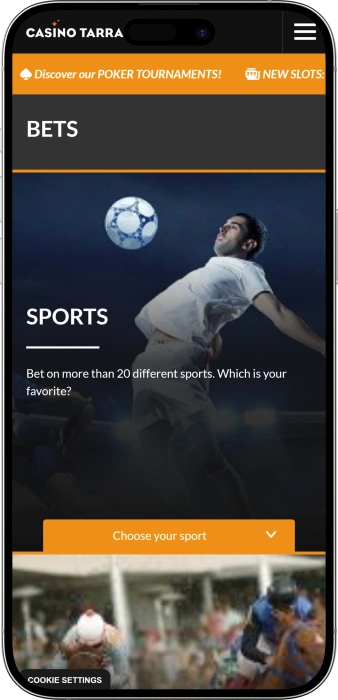

Oferta exclusiva de bienvenida de
Oferta exclusiva de bienvenida de
Disfruta del Mejor Casino y Póker en Costa Dorada
Los mejores casinos
Detalles de bonificación
Casino
Bonos
Rate
Giros gratis
Más info
Conseguir
Ventajas
- ¿Buscas un casino con ambiente único? Casino Tarragona combina juegos de azar con gastronomía y música en vivo en el corazón histórico de la ciudad. Descubre por qué somos el destino preferido:
-
Más de 50 slots modernas con jackpots progresivos y últimas novedades del mercado
-
Sala de póker profesional con torneos Magnus Poker, Big Stack y Mensual Deep Tarraco
-
Ruleta francesa, Blackjack y Punto Banco con crupieres profesionales disponibles
-
Sportsbook con más de 20 deportes para apostar en vivo y pre-partido cada día
-
Ubicación privilegiada entre el Balcón del Mediterráneo y monumentos romanos
-
Horario extendido: abierto todos los días desde las 15:00 hasta las 03:00 horas
- Únete a miles de jugadores que disfrutan de la mejor experiencia de casino en Cataluña. Nuestro equipo está siempre disponible para ayudarte con atención personalizada y profesional.
Casino Tarragona App


Nuestra Historia y Compromiso
Casino Tarragona forma parte del prestigioso Grup Peralada, una referencia europea con más de cuatro décadas de experiencia en el sector del entretenimiento. Situado en Rambla Vella 2, en el corazón histórico de Tarragona, ofrecemos una experiencia única que combina juegos de casino, póker profesional, gastronomía de calidad y música en vivo. Nuestra misión es proporcionar entretenimiento responsable en un ambiente moderno y acogedor.
- Ampliación de la sala de juego con más de 50 máquinas tragaperras modernas
- Implementación de torneos de póker semanales y mensuales profesionales
- Incorporación de sportsbook con más de 20 disciplinas deportivas disponibles
La seguridad y el juego responsable son nuestras prioridades absolutas. Operamos bajo estricta regulación española con todas las licencias necesarias para garantizar un entorno de juego justo y transparente. Nuestras máquinas y mesas utilizan sistemas certificados de generación aleatoria, auditados regularmente por organismos independientes. Contamos con protocolos avanzados de seguridad y personal capacitado para identificar y prevenir comportamientos de riesgo. Continuamos invirtiendo en innovación para ofrecer las últimas novedades del sector: desde slots de última generación hasta mesas interactivas I-Table. Nuestro objetivo es seguir siendo el casino de referencia en Costa Dorada, combinando tradición con las tendencias más actuales del entretenimiento.
Guía Completa de Juegos de Casino
Todo Sobre los Juegos de Casino en Tarragona
El mundo del casino ofrece una variedad impresionante de opciones de entretenimiento que se adaptan a todos los perfiles de jugadores. Desde las emocionantes slots con jackpots millonarios hasta las estratégicas partidas de póker profesional, cada juego tiene características únicas que lo hacen especial. En esta guía completa exploraremos los juegos más populares disponibles en Casino Tarragona, proporcionándote toda la información necesaria para maximizar tu diversión y comprender las reglas fundamentales de cada modalidad.
Conocer las particularidades de cada juego te permite tomar decisiones informadas sobre dónde invertir tu tiempo y presupuesto. Algunos juegos requieren habilidad y estrategia, mientras otros dependen puramente del azar. Entender estas diferencias es clave para disfrutar plenamente de la experiencia del casino y gestionar tus expectativas de manera realista y responsable.
Máquinas Tragaperras: El Favorito del Público
Las slots representan el juego más popular en cualquier casino moderno debido a su simplicidad y potencial de grandes premios. Casino Tarragona cuenta con más de 50 máquinas tragaperras de última generación, incluyendo video slots temáticas, slots clásicas de frutas y máquinas con jackpots progresivos que acumulan premios millonarios. Cada máquina opera mediante un generador de números aleatorios certificado que garantiza resultados completamente imparciales en cada giro.
Las slots modernas ofrecen múltiples líneas de pago que pueden llegar hasta 50 o más combinaciones posibles por giro. Además, incorporan características especiales como símbolos wild que sustituyen otros símbolos, scatter que activan rondas de bonificación gratuitas, multiplicadores que aumentan tus ganancias y mini-juegos interactivos. Estas funciones adicionales no solo incrementan las posibilidades de ganar, sino que también hacen la experiencia mucho más dinámica y entretenida.
- Jackpots progresivos: Premios que crecen constantemente hasta que un jugador afortunado gana el bote completo, pueden alcanzar cifras de seis o siete dígitos.
- Video slots temáticas: Basadas en películas, series, mitología o aventuras, con gráficos HD y efectos de sonido inmersivos que transportan a mundos fascinantes.
- Slots clásicas: Versiones tradicionales con frutas, BAR y 7s, perfectas para jugadores que prefieren la simplicidad sin funciones complicadas.
- Consejo importante: Establece un presupuesto antes de jugar y respeta tus límites, las slots están diseñadas para entretenimiento a largo plazo.
Póker: El Juego de Habilidad y Estrategia
El póker es sin duda el juego de casino que más combina habilidad, psicología y estrategia matemática. A diferencia de otros juegos donde juegas contra la casa, en el póker compites directamente contra otros jugadores, lo que añade una dimensión completamente diferente de desafío intelectual. Casino Tarragona cuenta con una sala de póker profesional que alberga tanto cash games como torneos estructurados con diferentes niveles de buy-in para todos los presupuestos.
Las variantes más jugadas son Texas Hold'em No-Limit, donde cada jugador recibe dos cartas privadas y comparte cinco cartas comunitarias, y Pot-Limit Omaha, que otorga cuatro cartas privadas a cada participante. Los torneos regulares como el Magnus Poker todos los miércoles, el Big Stack cada viernes y el prestigioso Mensual Deep Tarraco atraen jugadores de toda Cataluña y más allá, creando una comunidad vibrante de entusiastas del póker.
- Texas Hold'em: La modalidad más popular mundialmente, relativamente fácil de aprender pero requiere años dominar la estrategia avanzada y el juego posicional.
- Omaha Pot-Limit: Más cartas privadas significan más combinaciones posibles y manos más fuertes, ideal para jugadores experimentados que buscan acción.
- Dealer's Choice: Los jugadores rotan eligiendo la variante a jugar cada mano, perfecto para mesas con jugadores versátiles y experimentados.
- Gestión de bankroll: Juega solo con dinero destinado al entretenimiento y nunca persigas pérdidas apostando más de lo planeado originalmente.
Ruleta: El Clásico Elegante del Casino
La ruleta es quizás el juego de casino más icónico e inmediatamente reconocible, simbolizando la elegancia y sofisticación del mundo del juego. Casino Tarragona ofrece ruleta francesa, considerada la variante más favorable para el jugador debido a sus reglas especiales que reducen la ventaja de la casa. El juego consiste en predecir en qué número o grupo de números se detendrá la bola después de que el crupier haga girar la rueda.
La rueda francesa tiene 37 casillas numeradas del 0 al 36, con números rojos y negros alternados y el 0 en verde. Puedes realizar múltiples tipos de apuestas: apuestas interiores a números específicos con pagos altos, o apuestas exteriores a grupos como rojo/negro, par/impar o docenas con probabilidades más altas pero pagos menores. La regla "en prison" devuelve la mitad de tu apuesta si sale el 0 en apuestas externas, reduciendo significativamente la ventaja del casino.
- Pleno: Apuesta a un solo número, paga 35 a 1 pero tiene baja probabilidad, ideal para jugadores que buscan emociones fuertes.
- Rojo/Negro o Par/Impar: Apuestas con casi 50% de probabilidad que pagan 1 a 1, perfectas para estrategias conservadoras de largo plazo.
- Docenas y columnas: Cubren 12 números y pagan 2 a 1, equilibrio perfecto entre riesgo y recompensa potencial.
- Vecinos del cero: Apuestas especiales que cubren secciones físicas de la rueda, utilizadas por jugadores avanzados con estrategias complejas.
Blackjack: El Juego de las Decisiones Estratégicas
El blackjack es el juego de mesa de casino con la ventaja de la casa más baja cuando se aplica estrategia básica correcta, lo que lo convierte en favorito de jugadores estratégicos. El objetivo es simple: conseguir una mano cuyo valor sea 21 o lo más cercano posible sin pasarse, superando la mano del crupier. Las figuras valen 10, el as puede valer 1 u 11, y el resto conserva su valor facial.
Casino Tarragona ofrece tanto blackjack tradicional como I-Table Blackjack, una versión innovadora con pantalla táctil donde cada jugador controla su juego individualmente. Dominar la estrategia básica reduce la ventaja del casino a menos del 1%, haciendo del blackjack uno de los juegos más favorables matemáticamente. Esta estrategia indica la decisión óptima para cada combinación posible de tu mano y la carta visible del crupier.
- Estrategia básica: Tabla matemáticamente probada que indica cuándo pedir carta, plantarse, doblar o separar, disponible legalmente durante el juego.
- Doblar apuesta: Cuando tienes ventaja, puedes duplicar tu apuesta recibiendo solo una carta adicional, maximizando ganancias en situaciones favorables.
- Separar parejas: Si recibes dos cartas iguales, puedes separarlas en dos manos independientes, especialmente ventajoso con ases y ochos.
- Seguro: Apuesta lateral cuando el crupier muestra as, generalmente desaconsejada por expertos ya que aumenta la ventaja de la casa a largo plazo.
Punto Banco: La Elegancia del Baccarat
El Punto Banco, conocido internacionalmente como Baccarat, es un juego de cartas asociado tradicionalmente con sofisticación y altas apuestas. A pesar de su aura exclusiva, las reglas son sorprendentemente simples: apuestas a que la mano del Punto (jugador) o la Banca (banco) se acercará más a 9, o que habrá empate. El crupier maneja todas las cartas según reglas fijas, por lo que no se requieren decisiones estratégicas complejas.
Las cartas del 2 al 9 valen su valor facial, las figuras y el 10 valen cero, y el as vale uno. Si el total supera 9, solo cuenta el dígito de las unidades: una mano de 7 y 8 suma 15, pero vale 5. La mano de Banca tiene una ligera ventaja estadística, por lo que las ganancias en Banca pagan 0.95 a 1 (5% de comisión), mientras que Punto paga 1 a 1. La apuesta a empate paga 8 a 1 pero tiene ventaja de casa muy alta.
- Simplicidad total: No hay decisiones que tomar después de apostar, el juego sigue reglas automáticas, perfecto para relajarse sin pensar estrategia.
- Baja ventaja de casa: Apostar a Banca tiene solo 1.06% de ventaja de casa, una de las mejores en todo el casino.
- Ritmo rápido: Las manos se resuelven rápidamente permitiendo muchas rondas por hora, ideal para jugadores que buscan acción constante.
- Evita el empate: Aunque paga atractivos 8 a 1, la probabilidad es baja y la ventaja de casa supera el 14%, haciéndola matemáticamente desfavorable.
Apuestas Deportivas: Combina Pasión y Conocimiento
El sportsbook de Casino Tarragona permite apostar en más de 20 disciplinas deportivas diferentes, desde fútbol y baloncesto hasta tenis, UFC y carreras de caballos. Las apuestas deportivas añaden una dimensión extra de emoción al seguir tus equipos y deportistas favoritos, donde tu conocimiento del deporte puede marcar diferencia significativa en los resultados a largo plazo, a diferencia de los juegos puramente de azar.
Puedes realizar apuestas pre-partido con tiempo para analizar estadísticas, forma reciente, lesiones y otros factores relevantes, o apuestas en vivo mientras el evento se desarrolla, reaccionando al flujo del juego en tiempo real. Las cuotas cambian dinámicamente según la acción, ofreciendo oportunidades de valor para apostadores atentos. El sistema permite desde apuestas simples a un resultado hasta combinadas múltiples que multiplican las cuotas pero requieren acertar todos los pronósticos.
- Fútbol: El deporte más apostado con mercados extensos: resultado final, goleadores, corners, tarjetas y decenas de opciones por partido.
- Baloncesto: Apuestas a ganador, hándicaps asiáticos, total de puntos, desempeño de jugadores individuales en NBA y Euroliga.
- Tenis: Sets exactos, ganador de juego específico, total de aces, ideal por ser deporte individual donde el análisis de forma es crucial.
- Apuestas en vivo: Reacciona al desarrollo del evento con cuotas que cambian segundo a segundo, requiere concentración y decisiones rápidas.
Mesas Interactivas I-Table: Tecnología de Vanguardia
Casino Tarragona ha incorporado tecnología I-Table en varios juegos, combinando la experiencia de juego en vivo con interfaces digitales interactivas. Estas mesas electrónicas permiten que múltiples jugadores participen simultáneamente con sus propias pantallas táctiles individuales, mientras un crupier real conduce el juego. Esta innovación mantiene el aspecto social del casino eliminando confusiones sobre apuestas y proporcionando información estadística en tiempo real.
Disponibles en formatos como I-Table Blackjack y I-Table Ultimate Texas Hold'em, estas mesas ofrecen ventajas únicas: visualización clara de tu historial de manos, estadísticas de resultados previos, control total del ritmo de tu juego sin presión de otros jugadores, y la posibilidad de apostar cantidades diferentes a otros participantes en la misma mesa. Es la fusión perfecta entre el ambiente tradicional de casino y la comodidad de la tecnología digital moderna.
- Privacidad de apuestas: Nadie más en la mesa ve cuánto apuestas, ideal para jugadores discretos o que varían significativamente sus apuestas.
- Estadísticas integradas: Acceso instantáneo a tendencias, rachas calientes o frías, y análisis de manos anteriores para informar decisiones.
- Sin errores de pago: El sistema calcula y paga automáticamente todas las ganancias con precisión matemática absoluta, eliminando disputas.
- Multijugador real: Mantiene la dimensión social con crupier en vivo y otros jugadores visibles, no es juego contra ordenador.
Consejos para Principiantes
Si es tu primera visita a un casino, es completamente normal sentirse ligeramente abrumado por la variedad de opciones y el ambiente. La mejor estrategia es comenzar con juegos simples como las slots o la ruleta, donde las reglas son fáciles de comprender y puedes empezar a jugar inmediatamente sin conocimientos previos extensos. Establece siempre un presupuesto específico antes de entrar y considera ese dinero como el costo del entretenimiento, similar a pagar por entradas de cine o concierto.
El personal de Casino Tarragona está siempre disponible para explicar reglas, resolver dudas y ayudarte a sentirte cómodo. No dudes en preguntar cualquier cosa, desde cómo funciona un juego específico hasta dónde encontrar los servicios. Muchos casinos ofrecen sesiones gratuitas de aprendizaje donde puedes practicar sin apostar dinero real, aprovecha estos recursos si están disponibles. Recuerda que el objetivo principal es divertirse y disfrutar de la experiencia, las ganancias son un bonus agradable pero no el propósito fundamental.
- Observa primero: Antes de sentarte en una mesa, observa algunas manos para familiarizarte con el ritmo y la dinámica del juego.
- Empieza con apuestas mínimas: Las mesas tienen límites variables, busca las de apuesta mínima baja mientras aprendes y ganas confianza.
- No bebas en exceso: El alcohol afecta el juicio y puede llevarte a tomar decisiones impulsivas que lamentarás después.
- Toma descansos regulares: Levántate, camina, toma aire fresco para mantener la perspectiva clara y evitar fatiga de decisión.
Juego Responsable: Lo Más Importante
Casino Tarragona está comprometido con el juego responsable y ofrece múltiples herramientas para ayudar a los jugadores a mantener el control. Establece límites de depósito diarios, semanales o mensuales para gestionar tu presupuesto automáticamente. Configura recordatorios de tiempo para no perder la noción de cuánto llevas jugando. Si sientes que estás perdiendo el control o el juego está afectando negativamente tu vida personal o financiera, utiliza las opciones de autoexclusión temporal o permanente disponibles.
Las señales de alerta incluyen: gastar más dinero del planeado regularmente, mentir a familiares sobre tus actividades de juego, descuidar responsabilidades laborales o personales por jugar, o intentar recuperar pérdidas aumentando las apuestas desesperadamente. Si reconoces cualquiera de estos patrones, busca ayuda profesional inmediatamente. Existen organizaciones especializadas en ayudar a personas con problemas de juego que ofrecen apoyo confidencial y gratuito.
- Juega por diversión: El casino es entretenimiento, no una forma de ganar dinero o solucionar problemas financieros, mantén esa perspectiva siempre.
- Nunca persigas pérdidas: Aceptar las pérdidas es parte del juego, intentar recuperarlas aumentando apuestas casi siempre empeora la situación.
- Equilibrio en la vida: El juego debe ser una actividad ocasional, no el centro de tu vida social o forma principal de pasar el tiempo libre.
- Busca ayuda temprano: Si tienes dudas sobre tu relación con el juego, contacta organizaciones de ayuda antes de que el problema se agrave.
Proveedores de software
Métodos de Pago y Transacciones Seguras
Opciones de Pago en Casino Tarragona
Gestionar tu dinero de forma segura y eficiente es fundamental para disfrutar plenamente de la experiencia del casino. Casino Tarragona ofrece múltiples métodos de pago diseñados para proporcionar flexibilidad, rapidez y máxima protección de tus datos financieros. En esta guía completa analizamos todos los sistemas disponibles para depositar y retirar fondos, comparando sus características principales para ayudarte a elegir el método que mejor se adapte a tus necesidades específicas y preferencias personales.
Cada método de pago tiene ventajas únicas en términos de velocidad de procesamiento, límites de transacción, comisiones aplicables y nivel de privacidad. Algunos jugadores priorizan la rapidez y prefieren billeteras electrónicas que procesan transacciones instantáneamente, mientras otros valoran la trazabilidad formal que ofrecen las transferencias bancarias tradicionales. Comprender estas diferencias te permite tomar decisiones informadas que optimicen tu experiencia y minimicen costos innecesarios.
| Método de Pago | Tiempo Depósito | Tiempo Retiro | Límites |
|---|---|---|---|
| Tarjeta Crédito/Débito | Instantáneo | 3-5 días hábiles | €20 - €5.000 |
| E-Wallets (Skrill, Neteller) | Instantáneo | 24 horas | €10 - €10.000 |
| Transferencia Bancaria | 1-2 días hábiles | 3-7 días hábiles | €50 - €50.000 |
| Criptomonedas (BTC, ETH) | 15-30 minutos | 1-2 horas | €20 - €20.000 |
| PayPal | Instantáneo | 24 horas | €10 - €8.000 |
| Paysafecard | Instantáneo | No disponible | €10 - €1.000 |
Tarjetas de Crédito y Débito: Universalidad y Confianza
Las tarjetas Visa y Mastercard constituyen el método de pago más extendido y familiar para la mayoría de usuarios. Su principal ventaja radica en la disponibilidad prácticamente universal: casi todos los jugadores poseen al menos una tarjeta bancaria, eliminando la necesidad de registrarse en plataformas adicionales o gestionar cuentas terceras. Los depósitos se acreditan instantáneamente en tu cuenta de casino, permitiéndote comenzar a jugar sin esperas ni complicaciones adicionales.
Sin embargo, los retiros mediante tarjetas bancarias requieren un período de procesamiento de tres a cinco días hábiles debido a las verificaciones de seguridad del sistema bancario tradicional. Este tiempo puede extenderse ligeramente si hay fines de semana o festivos de por medio. Es importante verificar previamente que tu entidad bancaria no bloquee transacciones relacionadas con actividades de juego, ya que algunos bancos aplican restricciones en ciertas jurisdicciones por políticas internas de prevención de fraude.
- Protección bancaria: Las instituciones financieras ofrecen sistemas avanzados de detección de fraude y posibilidad de disputar cargos no autorizados.
- Sin registros adicionales: Utiliza directamente tu tarjeta existente sin crear cuentas en servicios terceros, simplificando el proceso al máximo.
- Límites moderados: Adecuados para jugadores recreativos típicos, aunque pueden resultar restrictivos para high-rollers con bankrolls significativos.
- Posibles comisiones: Algunos bancos cobran comisiones por transacciones internacionales o conversión de divisa, verifica las condiciones de tu entidad.
Billeteras Electrónicas: Rapidez Excepcional
Las e-wallets como Skrill, Neteller y PayPal han revolucionado la forma en que los jugadores gestionan sus fondos en casinos online gracias a su velocidad insuperable. Tanto depósitos como retiros se procesan de manera prácticamente instantánea, con retiros típicamente completados en menos de veinticuatro horas. Esta rapidez las convierte en la opción preferida para jugadores que valoran el acceso inmediato a sus ganancias sin frustrantes períodos de espera prolongados.
Otra ventaja significativa es la capa adicional de privacidad y seguridad que proporcionan: no necesitas compartir directamente tus datos bancarios con el casino, ya que la e-wallet actúa como intermediario protector. Además, los límites de transacción suelen ser más generosos que con tarjetas bancarias, permitiendo a jugadores con presupuestos mayores mover cantidades sustanciales con total comodidad. Las e-wallets también facilitan la gestión multidivisa si juegas en casinos de diferentes países o regiones.
- Skrill: Popular en Europa con excelente soporte multimoneda y comisiones competitivas, ideal para jugadores internacionales que manejan diversas divisas.
- Neteller: Similar a Skrill con fuerte presencia en el sector del juego, ofrece tarjeta prepagada vinculada para retirar efectivo en cajeros.
- PayPal: La más conocida globalmente con interfaz extremadamente intuitiva, aunque no todos los casinos la aceptan debido a políticas corporativas restrictivas.
- Consideración importante: Algunos casinos excluyen depósitos vía e-wallet de bonos de bienvenida para prevenir abuso, lee términos antes de elegir.
Transferencias Bancarias: Para Grandes Cantidades
Las transferencias bancarias directas representan el método más adecuado para jugadores que manejan cantidades sustanciales y priorizan la trazabilidad formal completa. Con límites significativamente superiores a otros métodos, frecuentemente permitiendo transacciones de cincuenta mil euros o más, son la opción predilecta de high-rollers y jugadores profesionales. Proporcionan registro bancario oficial de todas las transacciones, útil para propósitos contables o declaraciones fiscales si fuera necesario.
El principal inconveniente es el tiempo de procesamiento: los depósitos pueden tardar uno o dos días hábiles en reflejarse en tu cuenta de casino, mientras los retiros requieren entre tres y siete días hábiles. Esta demora se debe al procesamiento a través del sistema bancario internacional SWIFT o SEPA para Europa, que involucra múltiples verificaciones de seguridad y bancos intermediarios. No es la mejor opción si buscas acceso inmediato a fondos, pero resulta insuperable para mover grandes sumas con máxima seguridad.
- SEPA en Europa: Transferencias en euros dentro del Área Única de Pagos Europea con comisiones mínimas o nulas y procesamiento más rápido.
- Límites muy altos: Ideal para jugadores VIP que necesitan depositar o retirar decenas de miles de euros sin restricciones frustrantes.
- Máxima seguridad: El método más regulado y trazable, con múltiples capas de verificación bancaria que previenen fraudes efectivamente.
- Documentación formal: Extractos bancarios oficiales de todas las transacciones para propósitos contables o legales si es requerido.
Criptomonedas: Privacidad y Velocidad Combinadas
Bitcoin, Ethereum y otras criptomonedas están ganando popularidad rápidamente como método de pago en casinos debido a características únicas que combinan lo mejor de varios mundos. Las transacciones se procesan en la blockchain de manera descentralizada, resultando en velocidades excepcionales una vez confirmadas por la red: depósitos típicamente en quince a treinta minutos, retiros en una o dos horas. Esta rapidez rivaliza con las mejores e-wallets sin intermediarios bancarios que puedan ralentizar el proceso.
La principal ventaja es el anonimato prácticamente completo: las transacciones crypto requieren únicamente direcciones de wallet sin vincular datos personales identificables ni información bancaria sensible. Las comisiones suelen ser menores que métodos tradicionales y no existen restricciones geográficas ni problemas con conversión de divisas. Sin embargo, debes considerar la volatilidad inherente: el valor puede fluctuar significativamente entre depósito y retiro. Algunos jugadores mitigan este riesgo convirtiendo inmediatamente a stablecoins como USDT que mantienen paridad con el dólar.
- Bitcoin (BTC): La criptomoneda más aceptada y líquida, aunque comisiones de red varían según congestión, ideal para transacciones grandes.
- Ethereum (ETH): Procesamiento generalmente más rápido que Bitcoin y comisiones típicamente más bajas, segunda opción más popular en casinos.
- Litecoin (LTC): Diseñada específicamente para transacciones rápidas con comisiones mínimas, excelente para movimientos frecuentes de cantidades medianas.
- Stablecoins (USDT, USDC): Eliminan completamente el riesgo de volatilidad manteniendo valor estable, perfectas para jugadores cautelosos con las fluctuaciones.
Métodos Prepagados: Control Absoluto del Gasto
Paysafecard y otros sistemas prepagados ofrecen una solución única para jugadores que desean mantener control estricto sobre sus gastos de entretenimiento. El funcionamiento es simple: compras vouchers con valor predeterminado, típicamente entre diez y cien euros, en puntos de venta físicos o plataformas online, luego utilizas el código único de dieciséis dígitos para depositar exactamente esa cantidad en tu cuenta de casino. Es físicamente imposible gastar más de lo cargado previamente, convirtiéndolo en herramienta excelente para juego responsable.
La principal limitación es que Paysafecard funciona exclusivamente para depósitos, no para retiros: necesitarás configurar un método alternativo como transferencia bancaria o e-wallet para cobrar tus ganancias. Los límites también son más restrictivos comparados con otros métodos, con máximo típico de mil euros por transacción. Es ideal para jugadores ocasionales que quieren probar un casino sin comprometer métodos de pago permanentes, o para quienes viven en jurisdicciones con restricciones bancarias sobre actividades de juego online.
- Control de presupuesto: Imposible gastar más del valor cargado, protección automática contra gastos excesivos impulsivos durante sesiones de juego.
- Máxima privacidad: No requiere compartir ningún dato bancario o personal con el casino, solo el código del voucher prepagado.
- Solo depósitos: No puedes retirar ganancias mediante Paysafecard, necesitarás método alternativo para cobrar, planifica esto con anticipación.
- Disponibilidad amplia: Vouchers disponibles en miles de puntos de venta físicos: quioscos, gasolineras, supermercados y plataformas online autorizadas.
Seguridad en Transacciones: Protección Total
Casino Tarragona implementa los más altos estándares de seguridad para proteger todas tus transacciones financieras. La tecnología de encriptación SSL de doscientos cincuenta y seis bits codifica toda la información transmitida entre tu dispositivo y los servidores del casino, haciendo matemáticamente imposible que terceros intercepten datos sensibles como números de tarjeta, contraseñas o información personal identificable. Puedes verificar la presencia de este protocolo de seguridad observando el candado cerrado en la barra de direcciones de tu navegador.
Además de la encriptación, el casino cumple rigurosamente con regulaciones KYC (Know Your Customer) y AML (Anti-Money Laundering) requeridas por las autoridades españolas. Antes de procesar tu primer retiro, deberás verificar tu identidad enviando documentos como copia escaneada de tu DNI o pasaporte y comprobante de domicilio reciente. Aunque este proceso puede parecer tedioso, protege tanto al casino como a ti mismo contra actividades fraudulentas, robo de identidad y lavado de dinero. Completa la verificación inmediatamente después de registrarte para evitar retrasos frustrantes cuando quieras retirar ganancias.
- Autenticación de dos factores: Activa 2FA en tu cuenta de casino y en todos tus métodos de pago para capa extra de protección contra accesos no autorizados.
- Contraseñas únicas robustas: Nunca reutilices contraseñas entre casino, email y métodos de pago, usa gestor de contraseñas si es necesario.
- Monitoreo regular: Revisa frecuentemente tu historial de transacciones tanto en el casino como en tus métodos de pago para detectar actividad sospechosa tempranamente.
- Conexiones seguras: Evita absolutamente realizar transacciones financieras en redes WiFi públicas, usa tu conexión móvil o VPN confiable si es imprescindible.
Proceso de Verificación KYC: Qué Esperar
La verificación de identidad es un requisito legal obligatorio en todos los casinos regulados en España y la Unión Europea. Este proceso, conocido como KYC, requiere que proporciones documentación oficial que demuestre tu identidad, edad legal para jugar y residencia actual. Típicamente necesitarás enviar fotografía clara de tu DNI o pasaporte vigente, donde todos los datos sean perfectamente legibles, y un comprobante de domicilio reciente como factura de servicios, extracto bancario o documento gubernamental emitido en los últimos tres meses.
El equipo de seguridad del casino revisa manualmente cada documento para verificar autenticidad, lo cual generalmente toma entre veinticuatro y cuarenta y ocho horas hábiles. Ocasionalmente pueden solicitar documentación adicional si hay discrepancias o si la calidad de las imágenes enviadas inicialmente es insuficiente. Una vez completada la verificación exitosamente, tu cuenta queda validada permanentemente y podrás realizar todos los retiros futuros sin repetir el proceso, a menos que cambies datos personales como dirección de residencia.
- Documentos aceptados: DNI, pasaporte o tarjeta de residencia vigentes más factura servicios, extracto bancario o certificado empadronamiento reciente.
- Calidad de imagen: Fotografías claras con todos los datos legibles, sin reflejos que oculten información, preferiblemente en formato color de alta resolución.
- Tiempo de procesamiento: Habitualmente 24-48 horas hábiles, puede extenderse ligeramente durante fines de semana o períodos de alta demanda.
- Verifica temprano: Completa el proceso inmediatamente después del registro para evitar frustración cuando quieras retirar tus primeras ganancias importantes.
Comisiones y Costos: Transparencia Total
Casino Tarragona mantiene política de transparencia absoluta respecto a todas las comisiones aplicables en transacciones financieras. En la mayoría de casos, los depósitos son completamente gratuitos independientemente del método elegido: el casino asume los costos de procesamiento para facilitar tu acceso al entretenimiento sin barreras económicas adicionales. Los retiros también son generalmente gratuitos hasta cierta cantidad mensual o número de transacciones, dependiendo de tu nivel de jugador y método específico utilizado.
Sin embargo, debes considerar que algunos procesadores de pago externos pueden aplicar sus propias comisiones: por ejemplo, algunos bancos cobran por transferencias internacionales, ciertas e-wallets tienen comisiones por conversión de divisa, y las redes de criptomonedas cobran fees de transacción variables según congestión. Estas comisiones terceras están fuera del control del casino. Revisa siempre los términos de tu método de pago específico antes de realizar transacciones para evitar sorpresas desagradables y calcular tus costos reales totales con precisión.
- Depósitos gratuitos: Casino Tarragona no cobra comisiones por depositar fondos usando ningún método, facilita acceso sin costos ocultos.
- Retiros VIP: Jugadores de niveles superiores frecuentemente obtienen retiros ilimitados gratuitos como beneficio exclusivo de lealtad.
- Comisiones terceras: Bancos, e-wallets y redes crypto pueden aplicar sus propias comisiones independientes, verifica condiciones de cada proveedor.
- Conversión de divisa: Si tu cuenta bancaria está en moneda diferente al euro, pueden aplicarse costos adicionales de cambio con tipos variables.
Estrategia de Gestión de Fondos
Gestionar inteligentemente tus fondos es tan importante como elegir el método de pago correcto. Muchos jugadores experimentados utilizan estrategia mixta: e-wallets para movimientos frecuentes de cantidades pequeñas a medianas aprovechando la rapidez, y transferencias bancarias para depositar o retirar grandes sumas cuando la velocidad no es prioritaria. Esta aproximación balanceada optimiza costos de transacción mientras mantiene flexibilidad operativa para diferentes situaciones y necesidades cambiantes.
Otra práctica recomendable es mantener separado completamente tu bankroll de casino de tus finanzas personales cotidianas. Abre cuenta bancaria o e-wallet dedicada exclusivamente para actividades de juego, transfiriendo únicamente el presupuesto de entretenimiento que puedas permitirte perder sin afectar gastos esenciales. Esta separación física facilita enormemente el control de gastos y previene mezclar fondos destinados a diferentes propósitos, reduciendo significativamente el riesgo de problemas financieros relacionados con el juego.
- Presupuesto mensual fijo: Establece cantidad específica mensual para entretenimiento de casino y respétala estrictamente sin excepciones ni justificaciones.
- Retira ganancias regularmente: No dejes acumular saldos excesivos en tu cuenta de casino, retira ganancias significativas para evitar tentación de apostarlo todo.
- Registra transacciones: Mantén registro personal de todos los depósitos y retiros para monitorear tus patrones de gasto y detectar problemas tempranamente.
- Cuenta separada: Usa cuenta bancaria o e-wallet dedicada exclusivamente para juego, facilita enormemente el control presupuestario y la organización financiera.
Soporte para Problemas de Pago
Ocasionalmente pueden surgir problemas técnicos con transacciones: depósitos que no se reflejan inmediatamente, retiros que parecen retrasados más de lo normal, o discrepancias en cantidades procesadas. Casino Tarragona cuenta con equipo especializado de soporte financiero disponible para resolver cualquier incidencia relacionada con pagos de manera rápida y profesional. Antes de contactar soporte, verifica tu historial de transacciones tanto en el casino como en tu método de pago para confirmar el problema y recopilar información relevante.
Al reportar un problema de pago, proporciona detalles completos: fecha y hora exacta de la transacción, cantidad precisa, método utilizado, número de confirmación si está disponible, y descripción clara del problema experimentado. Cuanta más información específica proporciones, más rápidamente el equipo de soporte podrá investigar y resolver la incidencia. La mayoría de problemas se resuelven en veinticuatro a cuarenta y ocho horas, aunque casos complejos que requieren coordinación con procesadores de pago externos pueden tomar ligeramente más tiempo.
- Documentación completa: Capturas de pantalla de confirmaciones, extractos bancarios y historial del casino facilitan enormemente la investigación del problema.
- Tiempo razonable: Espera el tiempo normal de procesamiento antes de preocuparte, algunas demoras son completamente normales según el método.
- Canales de contacto: Email, chat en vivo y teléfono disponibles, el chat típicamente proporciona respuesta más rápida para problemas urgentes.
- Paciencia y cortesía: El equipo de soporte está para ayudarte, mantén comunicación respetuosa y profesional para resolución más efectiva y rápida.
Preguntas frecuentes
Casino Tarragona ofrece más de 50 máquinas tragaperras modernas con jackpots progresivos, mesas de póker profesional para cash games y torneos, ruleta francesa, Blackjack clásico y variantes I-Table con pantallas táctiles, Punto Banco, y un sportsbook completo con más de 20 deportes para apuestas en vivo y pre-partido.
Casino Tarragona está abierto todos los días de la semana desde las 15:00 horas (3:00 PM) hasta las 03:00 horas (3:00 AM) de la madrugada. Este horario extendido te permite disfrutar de nuestros juegos, gastronomía y entretenimiento en vivo en el momento que mejor se adapte a tu agenda personal y preferencias.
Organizamos torneos regulares de póker incluyendo Magnus Poker cada miércoles, Big Stack Poker todos los viernes, y el torneo mensual Mensual Deep Tarraco. También ofrecemos cash games diarios de No-Limit Hold'em y Dealer's Choice. La sala de póker está abierta de domingo a jueves y festivos de 16:30 a 01:30, y viernes, sábados y vísperas de festivos hasta horario extendido.
Casino Tarragona se encuentra en Rambla Vella, 2, en el corazón histórico de Tarragona, entre el icónico Balcón del Mediterráneo y los monumentos romanos de la ciudad. Esta ubicación privilegiada en Costa Dorada facilita el acceso tanto para residentes locales como para turistas, ofreciendo un entorno único que combina historia, cultura y entretenimiento de calidad.
Aceptamos tarjetas de crédito y débito Visa y Mastercard, billeteras electrónicas como Skrill, Neteller y PayPal, transferencias bancarias SEPA, criptomonedas incluyendo Bitcoin y Ethereum, y sistemas prepagados como Paysafecard. Cada método tiene diferentes tiempos de procesamiento y límites de transacción para adaptarse a tus necesidades específicas y preferencias personales.
Sí, Casino Tarragona ofrece experiencia de juego optimizada para dispositivos móviles mediante aplicaciones disponibles para Android en Google Play y para iOS en App Store. Puedes acceder a tus juegos favoritos, realizar depósitos y retiros, y gestionar tu cuenta desde tu smartphone o tablet con total seguridad y comodidad desde cualquier lugar.
Implementamos encriptación SSL de 256 bits para todas las transacciones, cumplimos rigurosamente con regulaciones KYC y AML españolas, utilizamos generadores de números aleatorios certificados en todas las máquinas y mesas, y contamos con personal capacitado para identificar comportamientos de riesgo. Además, ofrecemos herramientas de juego responsable como límites de depósito y autoexclusión.